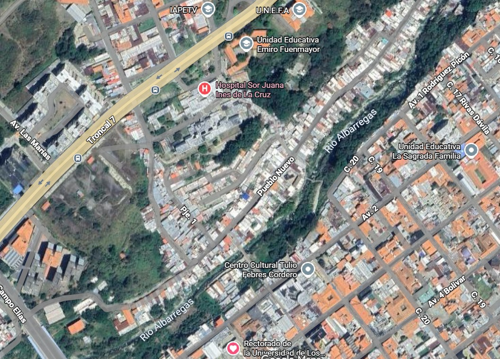
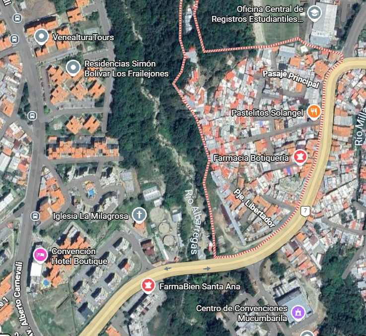
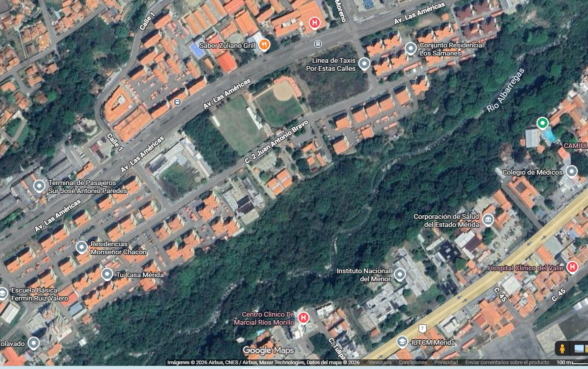

Investigación de Operaciones · Universidad de Los Andes
El río que atraviesa Mérida también nos une.
Somos estudiantes de la ULA y queremos convertir información, escucha comunitaria y decisiones transparentes en una ruta posible para recuperar el Río Albarregas.
- La Milagrosa
- Pueblo Nuevo
- Viaducto Campo Elías
Imagen satelital del corredor del Albarregas · material cartográfico del equipo
Una pregunta que nos pertenece
¿Cómo cuidamos mejor un río que forma parte de nuestra ciudad?
El Albarregas no es solamente un cauce. Es paisaje, memoria, conexión entre sectores y una oportunidad para aprender a decidir juntos.
Hoy existen señales de deterioro, residuos, descargas y preocupaciones de quienes viven, estudian o trabajan cerca del río. Nuestro proyecto busca reunir esas experiencias con mediciones ambientales para saber dónde actuar primero, qué vigilar y cómo usar responsablemente los recursos disponibles.
Nuestra visión
“Recuperar el Albarregas es recuperar una relación: la de Mérida con su agua, su paisaje y su capacidad de cuidarse en comunidad.”

Pueblo Nuevo · MéridaQuiénes somos
Estudiantes investigando desde la ULA y para Mérida
Somos estudiantes de la Universidad de Los Andes. Este proyecto nace en Investigación de Operaciones, una disciplina que ayuda a tomar mejores decisiones cuando hay varias necesidades, recursos limitados y distintas voces.
No queremos que un algoritmo decida por la comunidad. Queremos que ayude a mostrar alternativas claras para que las personas puedan conversar, comparar y elegir con evidencia.
Conocimiento con arraigo.
La universidad pública también es una forma de cuidar el territorio.
Nuestro enfoque
Escuchar. Observar. Decidir juntos.
No comenzamos con una solución cerrada. Comenzamos preguntando, midiendo y contrastando.
-
01
Escuchar a la comunidad
Una encuesta recogerá cómo las personas perciben el conflicto, la confianza, la participación, el bienestar y la presión por actuar.
-
02
Observar el río
Sensores, muestras de laboratorio, recorridos y registros previos ayudarán a construir una línea base ambiental independiente.
-
03
Comparar alternativas
Evaluaremos ubicaciones de sensores y planes de limpieza buscando equilibrio entre cobertura, costo y tiempo de respuesta.
Explicado sin complicaciones
Dos formas de conocimiento que se necesitan
Lo que la gente vive y lo que el río muestra no son lo mismo, pero deben conversar.
IAÍndice ambiental
Se construirá aparte con datos como turbidez, oxígeno, pH, bacterias, residuos, lluvias y posibles vertidos. Así evitamos confundir percepción con medición física.
El territorio guía el estudio
Tres sectores para comenzar a mirar el río como un sistema


La delimitación definitiva se validará mediante recorridos, seguridad, accesibilidad y conversación con actores locales.
Resultados de formulación
Lo que ya definimos
Estamos en la etapa inicial. Aún no presentamos resultados de laboratorio ni afirmamos que una intervención ya mejoró el río. Nuestro avance actual es un plan de investigación verificable.
Resultados que buscamos producir
- 01Un cuestionario comunitario claro y una base anónima.
- 02Un mapa de puntos críticos y una línea base ambiental.
- 03Alternativas de sensores y cuadrillas con costos visibles.
- 04Un tablero sencillo para compartir resultados con la comunidad.
Principios
La forma de investigar también importa
Con la comunidad
El conocimiento local orienta preguntas, recorridos y prioridades.
Sin estigmatizar
Estudiamos condiciones del sistema, no culpamos a un sector o a sus habitantes.
Con transparencia
Diferenciamos datos observados, percepciones y resultados simulados.
Con sentido de lo propio
Cuidar el río es cuidar el paisaje, la salud y la memoria compartida de Mérida.
Una invitación abierta
El Albarregas también es parte de nuestra casa.
Conocerlo, hablar de él y exigir decisiones responsables es una manera de cuidarlo. La recuperación será más fuerte si reúne universidad, comunidades e instituciones.
Actualizando preguntas, aún no está disponible.